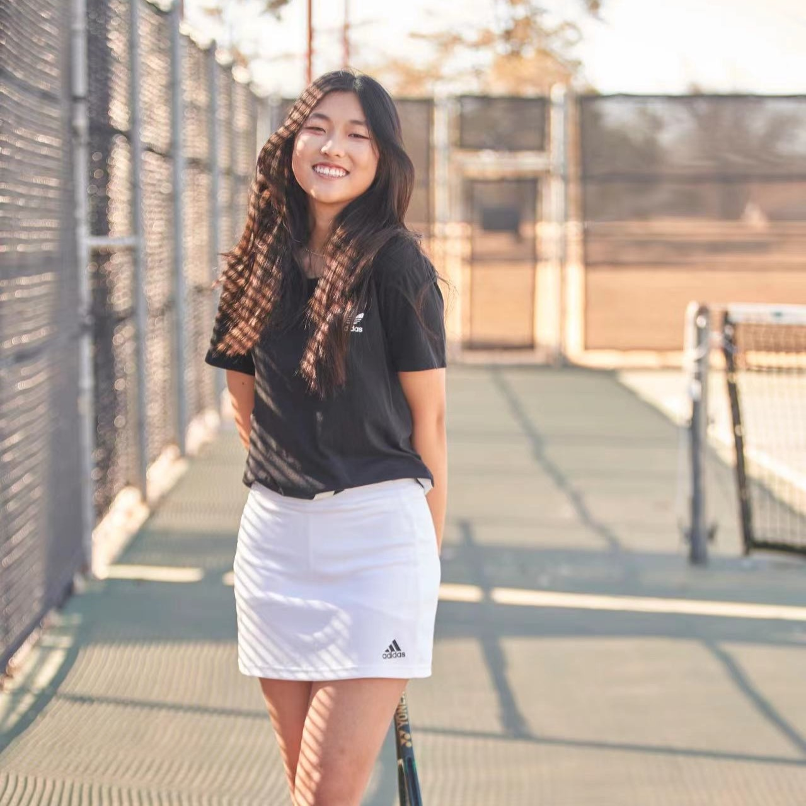
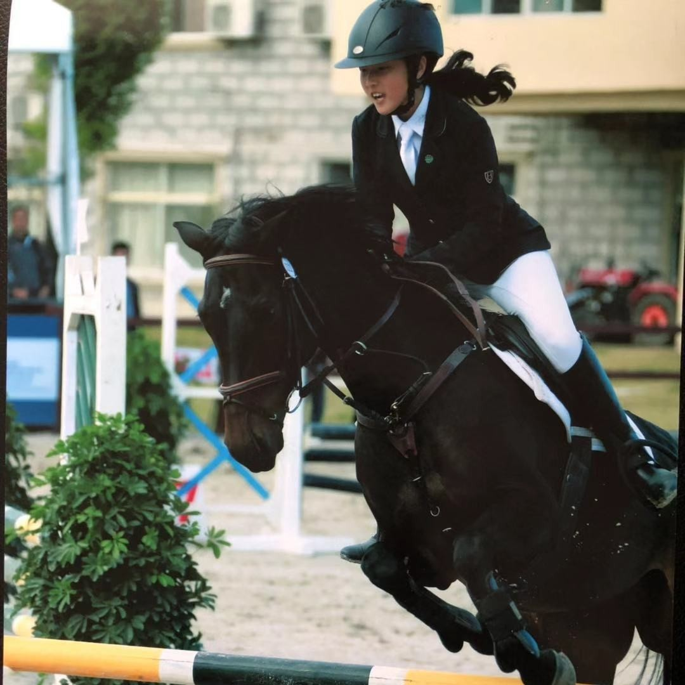
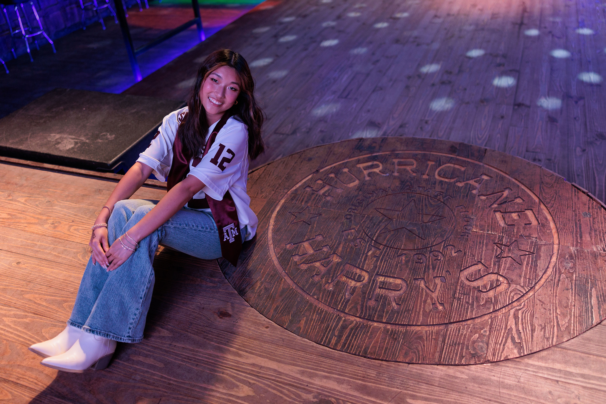
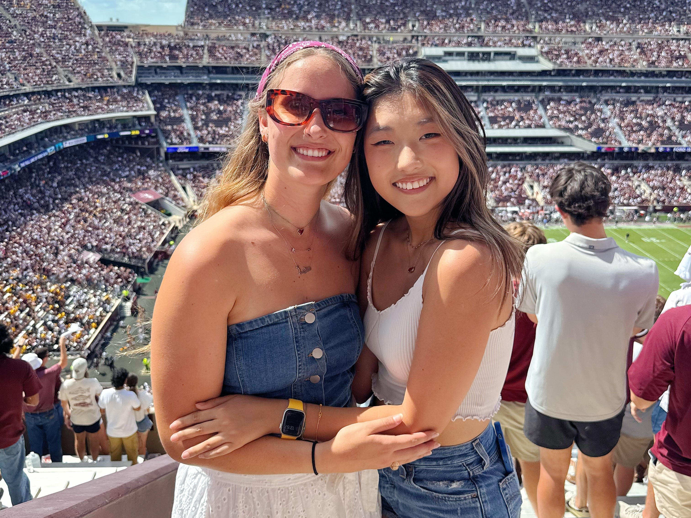
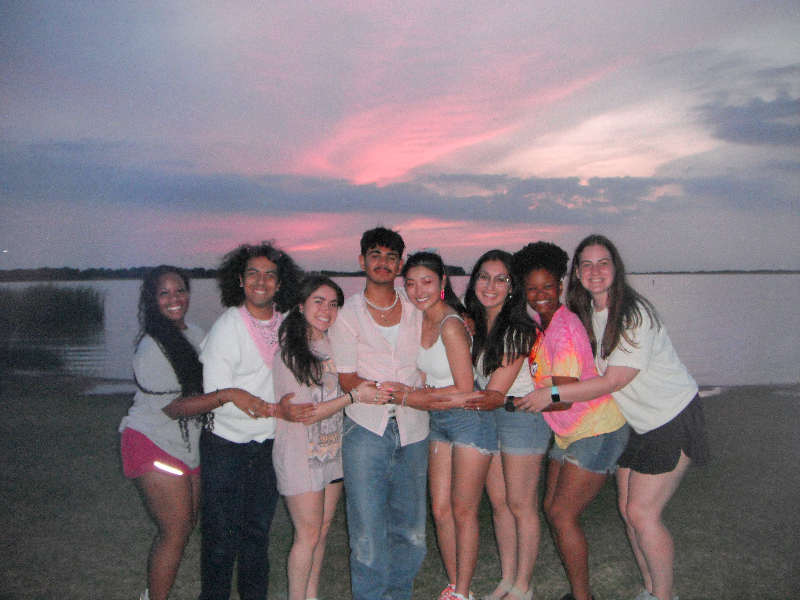

Beyond Engineering
Where engineering precision meets athletic rhythm and exploration.
Systems Architecture
Exploring the interaction between hardware and software through embedded systems, distributed infrastructure, operating systems, and performance-oriented architecture.

Pickleball
Pickleball became a hobby I picked up during my senior year of high school and has remained a consistent part of my life through recreational games with friends. Its balance of strategy, reaction time, and social interaction reflects the same adaptability and collaboration that I value in engineering and team environments.

Tennis
Having played tennis for over 8 years, including at the varsity level in high school, I continue to enjoy the sport recreationally with friends.
Equestrian
I began horseback riding in 4th grade and competed for many years, earning recognition across numerous competitions. Although I stepped away during high school due to a change in environment, I still continue riding recreationally whenever I have the opportunity. My passion for horseback riding has never faded, and horses continue to be my favorite animal. The sport has strengthened my discipline, adaptability, and ability to stay composed through constant communication, precision, and awareness.
Country Dancing
I started country dancing during the first semester of my sophomore year of college at Hurricane Harry’s, a local dance hall that quickly became one of my favorite places to unwind and connect with others. Since then, I have continued going back almost every week, developing a strong passion for both line dancing and country swing. Country dancing has given me an outlet for confidence, rhythm, and social connection while teaching me the importance of timing, coordination, and learning through repetition.

Golf
My interest in golfing during my sophomore year of college after taking a kinesiology course that introduced me to the sport. With the encouragement and support of my family, I continued learning and practicing consistently over time.


Trying new restaurants and traveling.
Volunteer
I am actively involved in volunteering at large-scale campus and community events at Texas A&M University. My experience includes participating in initiatives such as Adopt-A-Street and Big Event, where I contribute to maintaining a clean and sustainable environment.

"I’ve found that both engineering and my interests in sports and dance share a common rhythm—precision, strategy, and continuous improvement."

"We keep moving forward, opening new doors, and trying new things, because we are curious and curiosity keeps leading us down new paths."